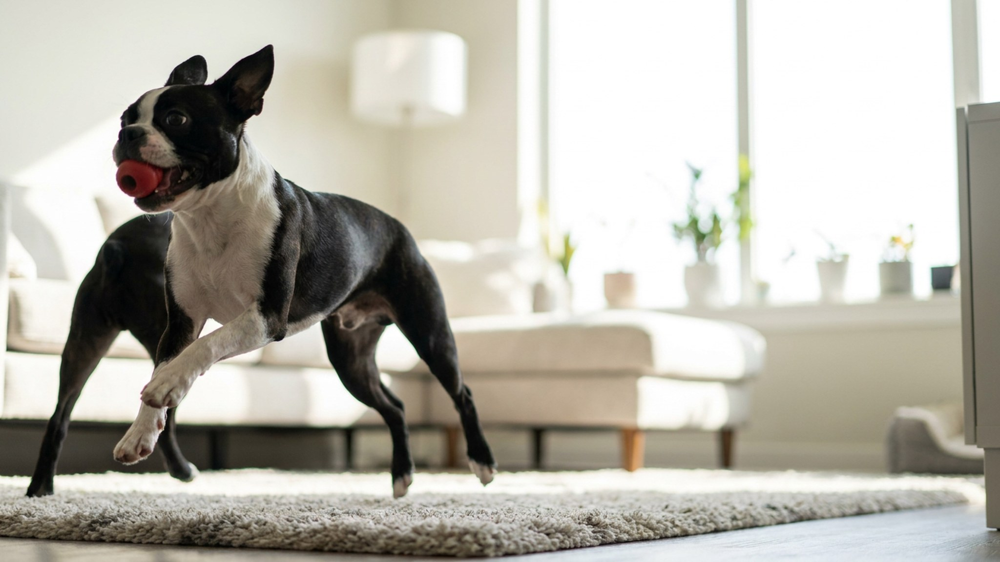

Слышали про «американского джентльмена»? Это про бостон-терьера — породу, которую легко спутать с мини-боксёром или бойцовой собакой по облику. На деле бостон-терьер — один из самых ласковых и контактных компаньонов, отлично приспособленных к квартирной жизни. Вот что важно знать, прежде чем завести.
🐾 У вас бостон-терьер?
AnimaLife соберёт уход под породу: к каким болезням есть склонность, что проверять по возрасту, чем кормить и когда пора к врачу. Бесплатно, прямо в мессенджере.
Собрать план ухода → Собрать в MAX →
У вас iPhone? AnimaLife есть в App Store
Бостон-терьер был выведен в США в конце XIX века как собака-компаньон — не охотник, не охранник, не боец. Это объясняет характер: порода ориентирована на человека, привязана к семье, легко уживается с детьми и другими питомцами. Агрессия не типична.
Бостон-терьер — идеальная городская собака по размеру (5–10 кг) и темпераменту. Не нуждается в большом пространстве, но нуждается в общении. Собака хорошо держит себя в руках и не склонна к разрушительному поведению при правильном распорядке дня.
Важный момент: порода не любит жару. Бостоны плохо переносят прогулки в зной — планируйте активность на утро и вечер в тёплое время года. Зимой из-за короткой шерсти может потребоваться лёгкий комбинезон.
Бостон-терьер — брахицефал: укороченная морда означает особое строение дыхательных путей. Это не болезнь, но требует внимательного отношения хозяина.
Если дыхание кажется затруднённым в покое или собака часто фыркает — хороший повод обсудить это с ветеринаром.
Шерсть бостон-терьера короткая и практически не требует груминга: достаточно протирать щёткой-рукавицей раз в неделю. Купать — по мере необходимости, не чаще раза в месяц.
В воспитании порода отзывчива: бостоны любят учиться и стараются угодить хозяину. Начинайте с базовых команд с щенячьего возраста, используйте короткие сессии (5–10 минут) и лакомства. Главное — последовательность: если нельзя что-то сегодня, нельзя и завтра.
Бостон-терьер подходит для первого питомца, семей с детьми, людей с умеренным образом жизни. Если вы искали небольшую контактную собаку для квартиры — это один из лучших вариантов.
🐾 Ваш питомец — бостон-терьер?
Заведите профиль в AnimaLife: приложение запомнит породу, возраст и вес и будет подсказывать по уходу именно для неё. Вопросы AI-ветеринару — круглосуточно и бесплатно.
Завести профиль → Завести в MAX →
У вас iPhone? AnimaLife есть в App Store
🐾 Понравился разбор?
Подпишитесь на канал — каждый день разбираем по одному тревожному симптому у кошек и собак: что в пределах нормы, а когда пора к врачу. Подпишитесь, чтобы не пропустить разбор, который может спасти здоровье вашего питомца.
Материал носит информационный характер и не заменяет очную консультацию ветеринара.